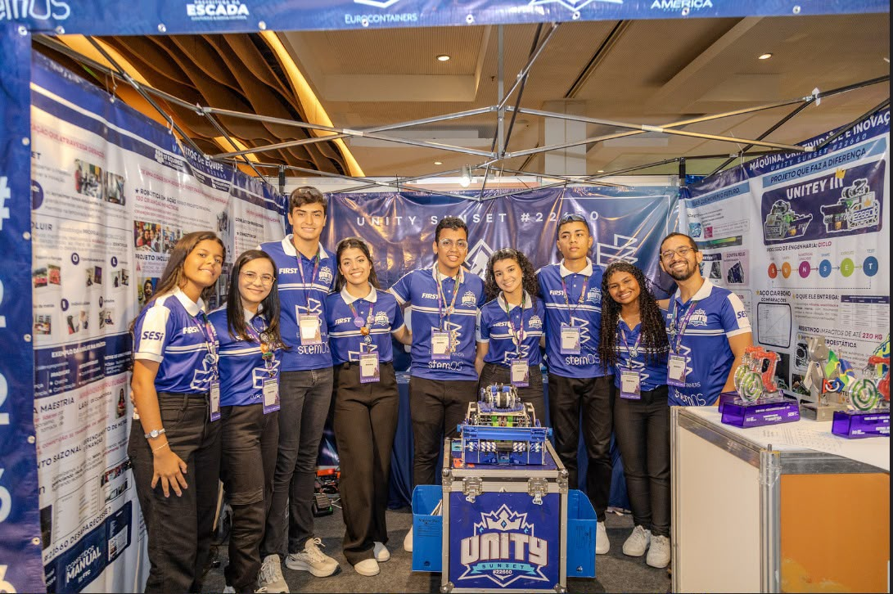
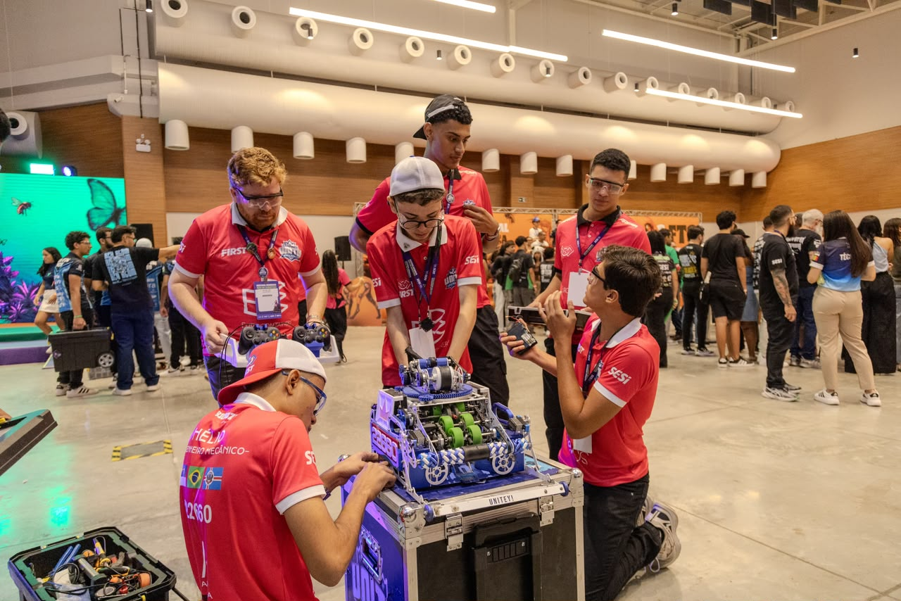
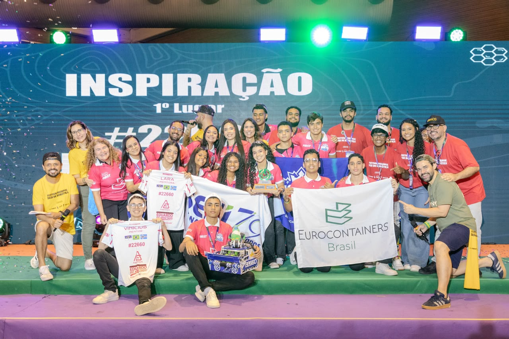
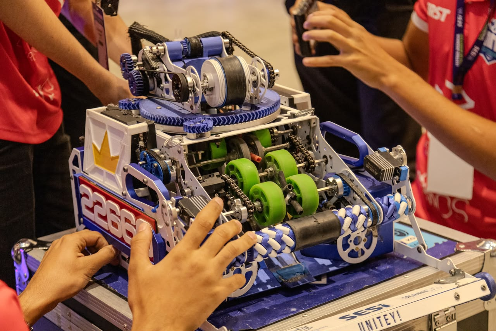
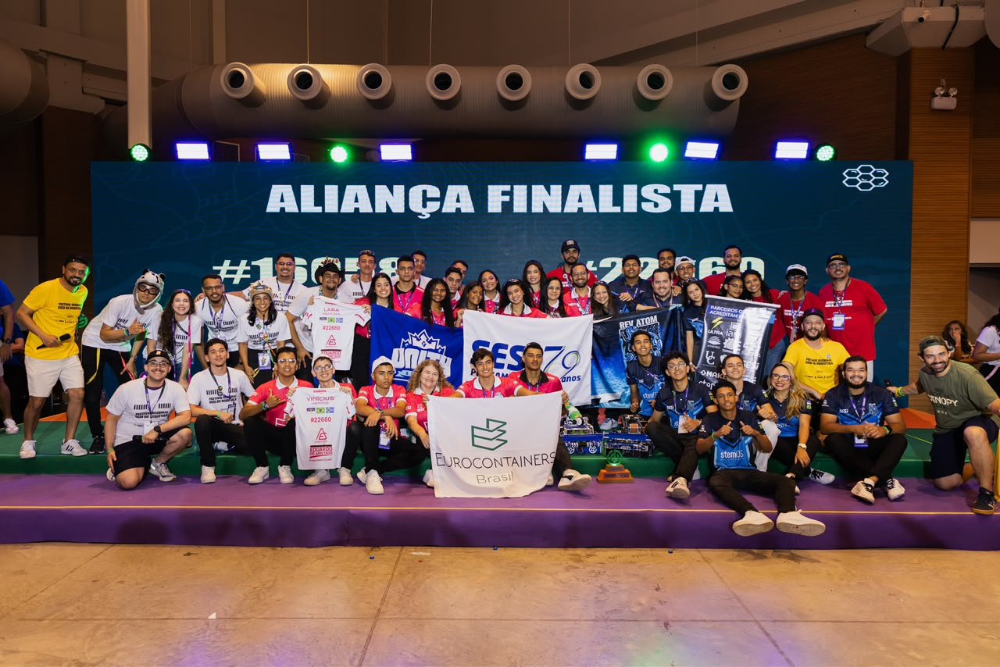
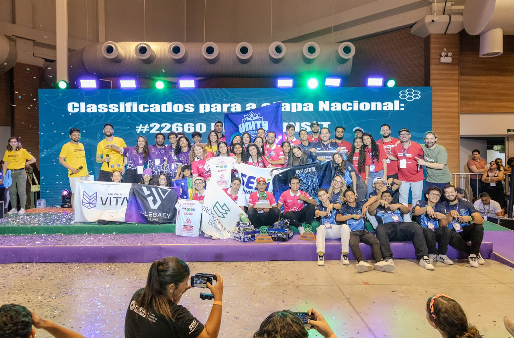
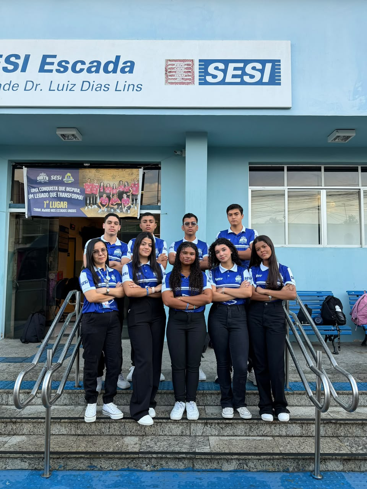

Robótica em Ação
Oficinas práticas com FLL Discover aproximam crianças da ciência por meio da experimentação, da criatividade e do trabalho em equipe.
17 equipes criadasDE ESCADA, PERNAMBUCO, PARA O MUNDO
Somos o Instituto Sunset. Conectamos educação, tecnologia e pessoas para ampliar oportunidades na Mata Sul de Pernambuco. Nossa história carrega a experiência e o compromisso social da equipe Unity Sunset #22660.

UMA EQUIPE. INFINITAS POSSIBILIDADES.INSTITUTO SUNSET · NOSSA ESSÊNCIA
Do primeiro protótipo às ações sociais, cada desafio é uma oportunidade de aprender, compartilhar e abrir caminhos para outros jovens.
Conheça a equipe e nossa história ↗

01 / NOSSOS PROJETOS
A tecnologia ganha sentido quando chega às pessoas. Nossa missão é democratizar o acesso à educação tecnológica na Mata Sul de Pernambuco.
EDUCAÇÃO QUE CHEGA MAIS LONGE
Iniciativas documentadas no portfólio BIOBUZZ da Unity Sunset, que dão base à trajetória do Instituto Sunset.
Oficinas práticas com FLL Discover aproximam crianças da ciência por meio da experimentação, da criatividade e do trabalho em equipe.
17 equipes criadasMaterial de apoio a famílias e educadores, com atividades e recursos visuais para ampliar a participação de crianças neurodivergentes.
Aprender de diferentes maneirasUma trilha de formação em planejamento, aplicação da FLL Discover, condução de encontros e acompanhamento das equipes.
24 horas de formação · 7 educadoresEncontros para compartilhar a evolução das crianças, integrar famílias e educadores e celebrar descobertas, com apresentações e atividades.
Vínculos que sustentam o aprendizadoComunidade criada em parceria com a equipe FTBEN #21077 para conectar equipes FTC do Nordeste, compartilhar conhecimento e oferecer apoio.
Mais de 15 equipes apoiadasA engenharia, a programação e a liderança se encontram na equipe #22660. A competição é também um espaço de formação e troca.
Conheça nossa equipe ↗Resultados registrados no portfólio BIOBUZZ regional enviado. Não representam uma medição em tempo real do instituto.

ENGENHARIA · PROGRAMAÇÃO · COLABORAÇÃOProjetar, construir, programar e aprimorar. No FIRST Tech Challenge, desenvolvemos soluções e aprendemos a transformar desafios em conhecimento compartilhado.
A experiência na arena fortalece habilidades técnicas e humanas que também impulsionam os projetos sociais.
Veja onde essa jornada nos levou ↗Levamos a robótica a comunidades com poucas oportunidades, aproximando crianças da ciência e da tecnologia desde a infância.
O projeto busca expandir a FIRST na Mata Sul, formar equipes de FLL Discover e capacitar educadores.
Uma iniciativa que aproxima a robótica de novos públicos. Entre as metas da equipe está realizar um torneio interno com as clínicas assistidas pelo projeto.
Inclusão e aprendizagemNOSSO PRÓXIMO PASSO
estudantes a impactar
novas equipes em escolas públicas
de expansão no alcance do projeto
Metas de expansão apresentadas na proposta de patrocínio. Os resultados da edição BIOBUZZ estão destacados nos projetos acima; as metas não representam um contador em tempo real.
Ajude a tornar isso possível ↗02 / CONQUISTAS
14 prêmios. Uma história escrita em equipe.
Da estreia em POWER PLAY à temporada BIOBUZZ, cada reconhecimento traduz trabalho, resiliência e vontade de ir além.
REGIONAIS
NACIONAIS
INTERNACIONAIS


03 / COMO VOCÊ PODE NOS AJUDAR
Invista em acesso à educação, formação de educadores e desenvolvimento de jovens talentos. Sua parceria viabiliza materiais, oficinas e a continuidade dos nossos projetos.
Conheça a proposta completa ↓ PDFQuatro formas de conectar sua marca a uma iniciativa que transforma. Os valores e as contrapartidas abaixo seguem a proposta da equipe Unity Sunset, base para uma conversa sobre sua parceria com o Instituto Sunset.
R$ 3.000
Projeto em 7 escolas
R$ 5.000
Projeto em 10 escolas
R$ 10.000
Projeto em 15 escolas
R$ 15.000
Projeto em 20 escolas
UMA PARCERIA QUE APARECE E ACONTECE
04 / SOBRE NÓS
O Instituto Sunset nasce da vontade de ampliar o alcance da educação tecnológica. Essa trajetória é construída a partir da experiência da Unity Sunset #22660, equipe criada em 2022 para conectar jovens à ciência, tecnologia, engenharia e matemática.
Nossa trajetória tem raízes no SESI Escada, em Pernambuco. Reunimos o aprendizado da equipe, de mentores, educadores e voluntários para construir um legado de inclusão e desenvolvimento.
Acompanhe @unitysunset_ftc ↗
CONHECIMENTO QUE SE COMPLEMENTA
Integrantes e áreas apresentados no portfólio regional BIOBUZZ da Unity Sunset.
Mentores, técnicos, educadores e voluntários ampliam essa rede com formação, acompanhamento e troca de experiências.
NOSSA MISSÃO
Democratizar o acesso à educação tecnológica, capacitar educadores e aproximar crianças da robótica desde a infância. É por isso que seguimos em movimento.
MEMÓRIAS QUE NOS MOVEM
VAMOS CONVERSAR
Conte como você quer participar: patrocínio, materiais, formação ou apoio aos projetos. Nossa equipe conversa com você sobre as possibilidades e os próximos passos.
Quero ser parceiro ↗Contatos e dados de apoio da equipe Unity Sunset, conforme os documentos enviados.